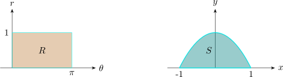

1.15 Functions From \(\mathbb {R}^n\) To \(\mathbb {R}^m\)
Let \(\Omega \) be a subset of \(\mathbb {R}^n\). Then a function or mapping \(f\) from \(\mathbb {R}^n\) to \(\mathbb {R}^m\) is a rule that assigns to each \(X = \begin {pmatrix} x_1, \cdots \cdots \cdots , x_n\\ \end {pmatrix}\) in \(\Omega \) a
unique vector \(f(x)\) in \(\mathbb {R}^m\).
\(f(x,y) = \big (x + 2y\ ,\ \ -3x + 4y\big )\)
\(f:\mathbb {R}^2 \longrightarrow \mathbb {R}^2\)
\(\displaystyle {f(x,y) = \begin {pmatrix} 1 & 2\\ -3 & 4\\ \end {pmatrix} \begin {pmatrix} x\\ y\\ \end {pmatrix} }\)
f can be represented by a matrix \( \begin {pmatrix} 1 & 2\\ -3 & 4\\ \end {pmatrix}\).
Let \(f: \mathbb {R}^2 \longrightarrow \mathbb {R}^2\) be defined by \[f(r,\theta ) = \big (r\cos \theta , r\sin \theta \big )\]
\[R = \big \{(r,\theta ) \hspace {0.1cm}:\hspace {0.1cm} 0\leq r \leq 1\hspace {0.1cm}, \hspace {0.1cm} 0\leq \theta \leq \pi \big \}\]

\[S = \big \{(x,y)\hspace {0.1cm}: \hspace {0.1cm} x = r\cos \theta \hspace {0.1cm} , \hspace {0.1cm} y = r\sin \theta .\hspace {0.2cm} 0 \leq r\leq 1 \hspace {0.1cm} , 0\leq \theta \leq \pi \big \}\]
Recall: A mapping \(f: \mathbb {R}^n \longrightarrow \mathbb {R}^m\) is called a linear transformation if
- 1.
- \(f(x+y) = f(x) + f(y)\hspace {1cm} x,y, \in \mathbb {R}^n\)
- 2.
- \(f(\alpha x) = \alpha f(x)\), \(\hspace {0.2cm} \alpha \) a scalar \(x \in \mathbb {R}^n\)
If \(f\) is a linear transformation from \(\mathbb {R}^n\) to \(\mathbb {R}^m\) , then there exists an \(m\times n\) matrix \(A\) such that \[f(x) = Ax\]
Given \(f\) and \(g\) \[f(x,y,z) =\left (\sqrt {1 - x^2 - y^2 -z^2}\ ,\ \ xy^2z^3\right )\]
\[g(x,y,z) = \left (\frac {1}{x + y + z}\ ,\ \ \sqrt {x}\right )\]
\[f: \mathbb {R}^3 \longrightarrow \mathbb {R}^2\hspace {0.5cm}, \hspace {0.5cm} g: \mathbb {R}^3 \longrightarrow \mathbb {R}^2\]
Compute \(-4f\) and \(f+g\) and determine their domains.
\[\text {Domain of }\hspace {0.2cm} f = \big \{(x,y,z)\hspace {0.1cm}:\hspace {0.1cm} x^2 + y^2 + z^2 \leq 1\big \}\]
\[-4f =\left (-4\sqrt {1 - x^2 - y^2 -z^2}\ ,\ \ -4 xy^2z^3\right )\]
\[\implies \hspace {0.5cm} \text {Domain of }\hspace {0.3cm} -4f = \hspace {0.3cm} \text {Domain of }\hspace {0.4cm} f.\]
\[f +g =\left (\sqrt {1 - x^2 - y^2 -z^2} + \frac {1}{x + y + z}\ ,\ \ xy^2z^3 + \sqrt {x}\right )\]
\[\text {Domain of } \hspace {0.3cm} f+ g = \big \{ (x,y,z)\hspace {0.1cm} : \hspace {0.1cm} x^2 + y^2 + z^2 \leq 1 \hspace {0.1cm}, \hspace {0.1cm} x+y+z\neq 0\hspace {0.1cm},\hspace {0.1cm} x\geq 0\big \}\]
Let \(f: \mathbb {R}^n \longrightarrow \mathbb {R}^m\) be differentiable at a point \(\underline {X}\) in \(\mathbb {R}^n\). Then the Jacobian of the mapping is the determinant of the Jacobian matrix.
Let \(f: \mathbb {R}^n \longrightarrow \mathbb {R}^n\) be in \(C^1\big (\Omega \big )\) for some open set \(\Omega \) in \(\mathbb {R}^n\).
Then \(f\) is said to be locally \(C^1\) invertible on \(\Omega \) if there exists a function \(g: \mathbb {R}^n \longrightarrow \mathbb {R}^n\) which is in \(C^1\big (f(\Omega )\big )\) such that \(\big (gof\big ) (x) = x\) for
every \(x\in \Omega \).
\(\big (fog\big )(y) = y\) for every \(y \in f\big (\Omega \big )\) i.e \(g = f^{-1}\).
Invertibility of a linear transformation \(f^{-1}(x) = A^{-1}(x)\) since \(f(x) = A x\).
Questions on this section
Stuck on something here? Ask below and it stays attached to this topic.